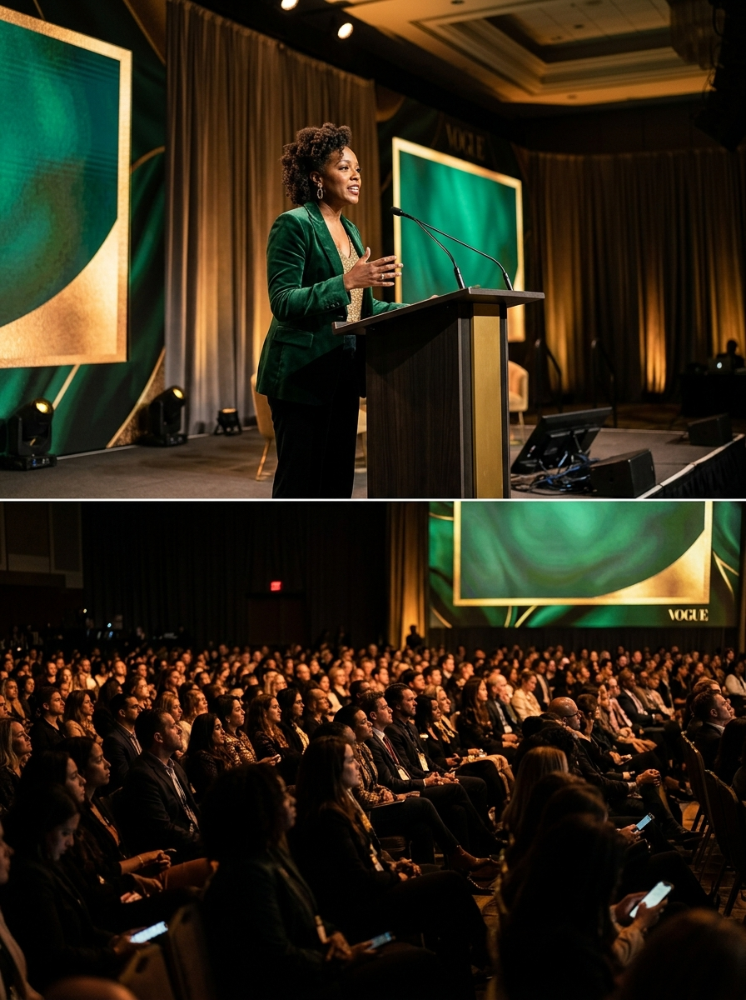

Bring Tiffany
to your stage.
Keynotes, conference sessions, panels, school programs, and workshops on gambling prevention, public health, and community impact. Every session is designed to break the silence and spark actionable change.
Invite Tiffany to Speak →"Tiffany doesn't just deliver a speech; she shifts the entire temperature of the room. Our community walked away not just inspired, but equipped with real tools to face gambling harm head-on."
Why organizations choose her.
Frontline credibility
With 4,000+ hours of actual outreach across communities, Tiffany speaks from deep, lived practice—not just theory.
Cultural fluency
Her Chicago soul and Louisiana roots allow her to connect authentically in spaces that traditional prevention programs historically miss.
Evidence-based
Every talk is rooted in clinical best practices including screening methodologies, early intervention, and harm reduction.
Practical takeaways
Motivation fades, but tools last. Audiences leave with actionable steps they can implement in their organizations on Monday morning.
Community-centered
Fifteen years of coalition building and institutional partnership work form the backbone of her community-first methodology.
Trusted professional
Backed by a BBA, MHP, and profound institutional affiliations, bringing both academic rigor and professional warmth.
Twenty-one topics. Four tracks. One throughline.
Click on any topic below to view the detailed curriculum and learning objectives.